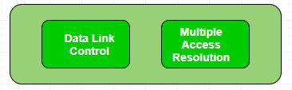
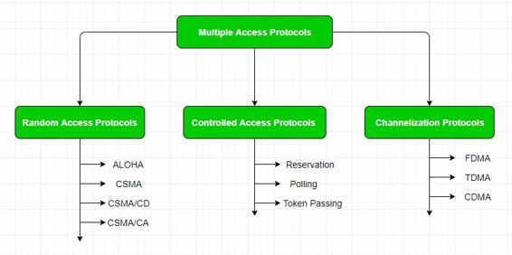

The Data Link Layer is responsible for transmission of data between two nodes. Its main functions are-
- Data Link Control
- Multiple Access Control

Data Link control –
The data link control is responsible for reliable transmission of message over transmission channel by using techniques like framing, error control and flow control. For Data link control refer to – Stop and Wait ARQ
Multiple Access Control –
If there is a dedicated link between the sender and the receiver then data link control layer is sufficient, however if there is no dedicated link present then multiple stations can access the channel simultaneously. Hence multiple access protocols are required to decrease collision and avoid crosstalk. For example, in a classroom full of students, when a teacher asks a question and all the students (or stations) start answering simultaneously (send data at same time) then a lot of chaos is created( data overlap or data lost) then it is the job of the teacher (multiple access protocols) to manage the students and make them answer one at a time.
Thus, protocols are required for sharing data on non dedicated channels. Multiple access protocols can be subdivided further as –

1. Random Access Protocol: In this, all stations have same superiority that is no station has more priority than another station. Any station can send data depending on medium’s state( idle or busy). It has two features:
- There is no fixed time for sending data
- There is no fixed sequence of stations sending data
The Random access protocols are further subdivided as:
(a) ALOHA – It was designed for wireless LAN but is also applicable for shared medium. In this, multiple stations can transmit data at the same time and can hence lead to collision and data being garbled.
- Pure Aloha:
When a station sends data it waits for an acknowledgement. If the acknowledgement doesn’t come within the allotted time then the station waits for a random amount of time called back-off time (Tb) and re-sends the data. Since different stations wait for different amount of time, the probability of further collision decreases.Vulnerable Time = 2* Frame transmission time Throughput = G exp{-2*G} Maximum throughput = 0.184 for G=0.5 - Slotted Aloha:
It is similar to pure aloha, except that we divide time into slots and sending of data is allowed only at the beginning of these slots. If a station misses out the allowed time, it must wait for the next slot. This reduces the probability of collision.Vulnerable Time = Frame transmission time Throughput = G exp{-*G} Maximum throughput = 0.368 for G=1
For more information on ALOHA refer – LAN Technologies
(b) CSMA – Carrier Sense Multiple Access ensures fewer collisions as the station is required to first sense the medium (for idle or busy) before transmitting data. If it is idle then it sends data, otherwise it waits till the channel becomes idle. However there is still chance of collision in CSMA due to propagation delay. For example, if station A wants to send data, it will first sense the medium.If it finds the channel idle, it will start sending data. However, by the time the first bit of data is transmitted (delayed due to propagation delay) from station A, if station B requests to send data and senses the medium it will also find it idle and will also send data. This will result in collision of data from station A and B.
CSMA access modes-
- 1-persistent: The node senses the channel, if idle it sends the data, otherwise it continuously keeps on checking the medium for being idle and transmits unconditionally(with 1 probability) as soon as the channel gets idle.
- Non-Persistent: The node senses the channel, if idle it sends the data, otherwise it checks the medium after a random amount of time (not continuously) and transmits when found idle.
- P-persistent: The node senses the medium, if idle it sends the data with p probability. If the data is not transmitted ((1-p) probability) then it waits for some time and checks the medium again, now if it is found idle then it send with p probability. This repeat continues until the frame is sent. It is used in Wifi and packet radio systems.
- O-persistent: Superiority of nodes is decided beforehand and transmission occurs in that order. If the medium is idle, node waits for its time slot to send data.
(c) CSMA/CD – Carrier sense multiple access with collision detection. Stations can terminate transmission of data if collision is detected. For more details refer – Efficiency of CSMA/CD
(d) CSMA/CA – Carrier sense multiple access with collision avoidance. The process of collisions detection involves sender receiving acknowledgement signals. If there is just one signal(its own) then the data is successfully sent but if there are two signals(its own and the one with which it has collided) then it means a collision has occurred. To distinguish between these two cases, collision must have a lot of impact on received signal. However it is not so in wired networks, so CSMA/CA is used in this case.
CSMA/CA avoids collision by:
- Interframe space – Station waits for medium to become idle and if found idle it does not immediately send data (to avoid collision due to propagation delay) rather it waits for a period of time called Interframe space or IFS. After this time it again checks the medium for being idle. The IFS duration depends on the priority of station.
- Contention Window – It is the amount of time divided into slots. If the sender is ready to send data, it chooses a random number of slots as wait time which doubles every time medium is not found idle. If the medium is found busy it does not restart the entire process, rather it restarts the timer when the channel is found idle again.
- Acknowledgement – The sender re-transmits the data if acknowledgement is not received before time-out.
2. Controlled Access:
In this, the data is sent by that station which is approved by all other stations. For further details refer – Controlled Access Protocols
3. Channelization:
In this, the available bandwidth of the link is shared in time, frequency and code to multiple stations to access channel simultaneously.
- Frequency Division Multiple Access (FDMA) – The available bandwidth is divided into equal bands so that each station can be allocated its own band. Guard bands are also added so that no to bands overlap to avoid crosstalk and noise.
- Time Division Multiple Access (TDMA) – In this, the bandwidth is shared between multiple stations. To avoid collision time is divided into slots and stations are allotted these slots to transmit data. However there is a overhead of synchronization as each station needs to know its time slot. This is resolved by adding synchronization bits to each slot. Another issue with TDMA is propagation delay which is resolved by addition of guard bands.
For more details refer – Circuit Switching - Code Division Multiple Access (CDMA) – One channel carries all transmissions simultaneously. There is neither division of bandwidth nor division of time. For example, if there are many people in a room all speaking at the same time, then also perfect reception of data is possible if only two person speak the same language. Similarly data from different stations can be transmitted simultaneously in different code languages.